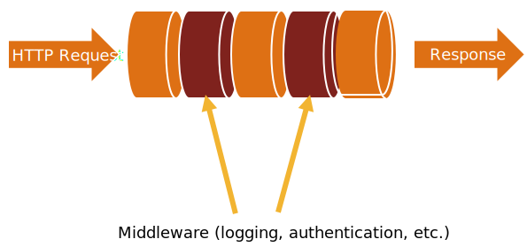

▻
1 HTTP
const http = require('http');
const hostname = '127.0.0.1';
const port = 3000;
const server = http.createServer((req, res) => {
res.statusCode = 200;
res.setHeader('Content-Type', 'text/plain');
res.end('Hello World\n');
});
server.listen(port, hostname, () => {
console.log(`Server running at http://${hostname}:${port}/`);
});
▻
2 Connect
Connect is a middleware framework for node Built on top of node’s Http Server
var connect = require('connect');
var app = connect()
.use(connect.logger('dev'))
.use(connect.static('public'))
.use(function(req, res){
res.end('hello world\n');
})
http.createServer(app).listen(3000);

var connect = require('connect'),
util = require('util');
var interceptorFunction = function(request, response, next) {
console.log(util.format('Request for %s with method %s',
request.url, request.method));
next();
};
var app = connect()
.use(interceptorFunction)
.use(function onRequest(request, response) {
response.end('Hello from Connect!');
}).listen(3001);
▻
3 Express
- Project Generator
- Request / Response enhancements
- Routing
- View Support
- HTML Helpers
- Content Negotiation
- (all on top of connect)
express projectname
Creates your project with all the necessary packages Creates package.json has the dependencies listed
cd projectname npm install
Installs all dependencies to your project
DEBUG=node-express:* npm start
has your project up and running
▻
3.1 Views with JADE
app.get('/', function (req, res) {
res.render('index', {user: 'Welt'});
});
extends layout
block content
h1 Hallo #{user}
a(href='https://google.com') Google
ul
- for (var x = 0; x < 3; x++)
li bla
▻
3.2 Working with data
Pass data to the views
res.render('index', { title: 'Customer List' });
Read data from form
app.use(bodyParser.urlencoded({ extended: false }));
app.post('/', function(req, res){
var userName = req.body.username;
res.send(`Hello ${username}<br><a href="/">Try again.</a>`);
});
Read and send files
let filePath = req.files.picture.path; res.sendfile(filePath); // also: sets Content-Type from ext // res.download(filePath); // same, as attachment, size
Data for all views
app.locals.clock = new Date().toUTCString();
clock is now available in all views:
p This Server started at #{clock}